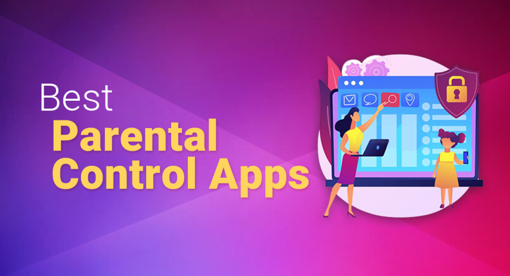

Top Parental Control Apps 2025
James McGill | Updated on March 5th 2023Privacy and Technology Consultant In a hurry? Here’s the top Parental Control App for 2025:
Parenting at any age has never been easy; just ask any sleep-deprived parent trying to keep it all together while juggling office work, household chores, and looking after the kids. However, many parents believe that parenting today is more challenging than 20 or 30 years ago.
The reason? Technology. Sure, it has turned moms into this multi-tasking real-life "superwoman" who can check her work email, make dinner plans, and schedule a doctor's appointment while having that tiny human perpetually attached to her hip. But a recent survey by SWNS Digital revealed that 4 out of 5 parents believe raising a child now is harder than it was when they were growing up, no thanks to smartphones, gaming apps, and social media sites.
With most kids getting their first mobile phone by the age of seven, keeping them safe against the dangers of the internet has become a priority for most parents. And rightly so, since consequences can be quite severe, costly, or even deadly. Here are the most common risks and dangers:
- Cyberbullying — Think of it as bullying in the school or office setting, but this time it's happening through text, apps, social media, gaming, or online forums where thousands of people can see, engage, or share. The end game is the same: to humiliate the victim by posting and/or sharing harmful, negative, mean, or embarrassing content, whether true or not. Cyberbullying includes but is not limited to cyberstalking, e-intimidation, doxing, flaming, happy slapping, revenge porn, and more.
- Online predators — are adults using fake profile photos and reaching out to kids via social media apps or gaming platforms. They'll pretend to be of the same age and interests and build a relationship through grooming, mirroring, or fishing (watch the movie Catfish, and you'll know what we mean). The worst thing is that online predators will turn casual chats into sexual conversations, sending lewd pictures to kids and vice versa, with some even culminating in face-to-face meetings.
- Identity thieves — A study by Javelin Strategy & Research shows that more than a million children were victims of identity theft or fraud in 2017, and 2/3 of these kids were age 7 and younger. Yup, those seemingly harmless "humble bragging" posts on social media turned out to be a minefield of information for the cybercriminals, revealing identifying information like schools, birth dates, and more. Before you know it, your toddler is getting calls from debt collectors.
- Online frauds, phishing, and scams — Unlike adults wary of opening emails and texts from strangers, kids are more prone to clicking links, especially if it promises free downloads or upgrades to their favorite games.
And these are just the "big, bad wolves". There are other less severe but equally harmful downsides to kids spending too much time on their gadgets.
• Obesity
• Sleep deprivation
• Behavior and educational problems
• Poor socializing skills
• Lower self-esteem
We can go and on. I wish we could say that establishing rules is enough to minimize the risks, but we know that's not true, especially if you're dealing with teenagers. So how can you keep an eye on them without being too obvious? Thankfully, there's a modern solution to a modern problem — parental control apps.
An overview of the best Parental Control Apps for 2025:
- 🥇 1. Panda — Rated 4.3 stars in TrustPilot, Panda is an advanced mobile phone tracker designed to give your kids a safe and carefree internet experience. Keep your children safe online and offline with real-time GPS tracking, panic button for emergency situations, device tracking, app usage reports, and more!
- 🥈 2. eyeZy — Compatible with both Android and iOS platforms, Eyezy has all the features you need to keep tabs on your child's online activities undetected.
- 🥉 3. mSpy — Keep track of everything remotely and in real-time: social media apps, SMS, calls, GPS, photos, videos, internet activities, contacts, calendars, and more. See every tap and keystroke, whether they're on their smartphone, tablet, or computer!
- Frequently Asked Questions about Parental Control Apps (FAQ).
What is parental control? How can it help parents like me?
Parental control is a software application that can help parents monitor, restrict, and manage what kids do online. When used in conjunction with rules and honest conversations with the kiddos, it can help keep their online experiences safe, fun, and productive. But with so many choices, how do you know which one is best for your family? Well, that depends entirely on your needs, but the best parental control should at least have the following core features:
- Screen Time Management - allows you to set time limits on your child's screen time or lock their device when they shouldn't be on it: bedtime, dinner, school, or homework time.
- App Blocking - block distracting, troubling, and inappropriate apps from your kid's devices — social media, gaming, shopping, dating apps, and more.
- Web Filtering - block websites that contain a predetermined set of words/content such as porn, drugs, hate speech, violence, criminal activities, and other harmful and explicit content.
- Location Tracker - with child abduction and missing children cases on the rise, this feature should give parents of young children some peace of mind. Some parental control apps can even send alarms to pre-set contacts, police, or other emergency contacts while others lets you create a geo-fence.
- Safety Alerts - some parental control programs trawl through images, videos, texts, chat messages, emails, and other content. When it finds concerning interactions, content, or messages indicative of suicide, cyberbullying, drugs, gambling, violence, and the like, you'll get a notification so you can step in before something happens.
- Social Network Monitoring - monitor your kid's social media interactions on popular apps like Facebook, YouTube, Twitter, TikTok, Instagram, WhatsApp, Snapchat, GroupMe, Kik, Tumblr, Live.Me, and more.
1. Panda — Best Parental Control Software For Families
Panda Family is perhaps one of the best online security investment you could get for your kids and family. For one, you will no longer have to worry if your children made it home safely. Panda Family offers real-time GPS tracking, so you know exactly where your children are at all times. You may set up "safe locations", and the app will notify you each time your kids enter or exit one of those regions. This feature is also handy if you have older individuals in your care who require monitoring.
Are your children turning into smartphone zombies? You can use Panda Dome's mobile device app and control functionality to prevent this undesirable habit from worsening. You'll be able to blacklist apps or limit their usage with this function, as well as limit device usage to prevent addictions. You'll also be able to restrict Internet access to specified hours. It's an excellent tool to have, especially during the school day.
If you're concerned about your children being exposed to improper content, Panda Dome Family provides a solution for you. You'll get access to app use statistics, allowing you to see a history of all the applications and social media sites your children use (WhatsApp, Instagram, Facebook, TikTok, and so on). You'll also be able to see how much time they spend online and set time limits if necessary.
Lost or stolen phone? Don't fret! Panda Dome Family can assist you in locating lost or stolen mobile devices. It also allows you to remotely erase all personal data to safeguard your and your loved ones' privacy.
Panda Dome Family clearly designed this app with the needs of children and their modern parents in mind. What we've discussed thus far are only the most obvious benefits. Additional safety measures, such as a panic button, were also greatly appreciated. Want to take it for a test drive? Click the link below and try Panda Dome Family on a trial license for 30 days!
Get Panda - Protect Your Kids Online!
2. eyeZy — AI-Powered Device Tracker
Eyezy claims to be “the most powerful phone monitoring software on the planet” and they're not exaggerating! They use artificial intelligence to keep one step ahead of the ever-evolving cybersecurity threats and keep your family's digital life secure. Eyezy boasts a long list of iPhone and Android tracking functions. It tracks real-time GPS position, social media activity and messages, incoming and outgoing text messages, phone conversations, and more.
Eyezy turned out to be one of the most comprehensive parental monitoring apps we've ever tested. It has tons of features, including seeing what your kids are up to on apps like TikTok, Instagram, Facebook, Snapchat, WhatsApp, and more. Besides social media monitoring, Eyezy also offers call log monitoring, keystroke recording, browsing history tracker, and many more. Like the majority of monitoring apps, Eyezy runs invisibly in the background on the target phone. As a result, it is totally undetectable to the person using the phone.
Eyezy is an excellent choice for Android and iOS devices. It has remarkable parental control capabilities that are difficult to find in other surveillance apps. Furthermore, Eyezy dedicated special attention to the end user experience on the dashboard. And it was clear from how well-organized each component was. It's easily one of the most reasonably priced spy applications for Android and iOS this year.
Get eyeZy - Protect Your Kids Online!
3. mSpy — Best For Monitoring
mSpy was actually one of the earliest monitoring apps to be released, given that it debuted in 2010. Calls, texts, and GPS tracking were among the basic capabilities it initially offered, but they have since made great strides in expanding the scope of monitoring and adding additional services.
The fact that mSpy entirely conceals itself after installation is one of the features we enjoy best about it. There is no need to have an awkward conversation about eavesdropping and betraying their trust because they won't even know it's there. Simply borrow their phone, install the app, and then maintain tabs on them for both your peace of mind and their safety.
Of course, that's not the end of it. mSpy can report on practically every aspect of your kid's online activity (and one or two offline ones, too).
Need to keep track of calls, for example? No issue. Worried about their text messages? You can check those, too (you can even view deleted ones.) Not only can you monitor phone calls, but you can also view their contact list. Moreover, the Android version of mSpy's software can record conversations on all popular messaging services, including Skype, Telegram, Viber, Instagram, Snapchat, Facebook, WhatsApp, and many more. This level of tracking might be deemed illegal for an adult target, but it's the perfect tool to ensure your kids have a safer online experience.
mSpy's offering is outstanding, and we can honestly say it's the top parental control and monitoring app out there. MSpy is exceptional in tracking texts, instant messages, and phone usage. You'll also appreciate that it uses little battery power and always runs in the background. For non-techy parents, no worries, installing and setting up mSpy is really easy.
Get mSpy - Protect Your Kids Online!
How we chose the Top Parental Control App for 2025
Not all Parental Control Apps are the same, and there are so many to choose from that it can be hard to figure out which one is best. To help you zero in on the best option, our experts have curated some suggestions that have been put through their paces based on the following criteria:
- Compatibility: We made sure to pick apps that are compatible with the platforms you might want to keep an eye on, whether that be Android, Windows, Mac, or iOS.
- Features: All of the applications on our list include useful functions such as screen time limits, website blocking, and location tracking.
- Ease of Use: You’ll have no trouble downloading or using any of the parental control apps featured on our website.
- Reliability: We also looked at user reviews and ratings to ensure that the app is trustworthy and effective.
- Privacy: Our vetted apps have a clean record when it comes to collecting and using user data in unsolicited ways.
- Cost: Based on their effectiveness and the features they provide, we believe all of our recommended apps offer value for the money.
- Customer support: The parental control apps we selected all have solid support systems in place.
- Age-appropriateness: All the apps on our list are designed for kids of all ages and levels of maturity.
Top Parental Control Software - Frequently Asked Questions (FAQ)
📲 Can it steal my kid's private data?
Nope. A federal law such as COPPA (Children's Online Privacy and Protection Act) ensures this doesn't happen. Under this law, websites and apps are required to get parental consent when collecting the personal information of kids ages 13 years and below.
💻 Can my kids see that I'm monitoring their phones and laptops?
It depends on the app you're using, some parental control software runs in hidden or invisible mode, so your kids can't tell their devices are being monitored. We recommend using the "stealth mode" only when necessary, as it can backfire and make your kids feel untrusted and betrayed.
📱 Can my kids bypass parental control?
If your kids are tech-savvy, there are several ways they could circumvent parental controls. This includes but is not limited to hacking the family router, using a proxy server, and bypassing DNS filters. But perhaps the easiest and most common tool they use is a VPN. If you suspect this is the case, just check if they've downloaded a VPN app, uninstall, and block it. At the end of the day, if there's a will, there's a way. This is why it's essential to get their buy-in and make them understand the app is for their own safety.
Transparency and Trust: The aim of this website is to help you find the perfect software for your needs in an easy-to-view comparison list. You can read more about how we review and about our background in the About Us section of this website. Software.fish does not feature all of the software available in the market, we cherry-pick what we consider to be the leaders in each vertical. We try to keep this site updated and fresh, but cannot guarantee the accuracy of the information as well as the prices featured at all times. All prices quoted on this site are based on USD so there could be slight discrepancies due to currency fluctuations. Although the site is free to use, we do earn commissions from the software companies that we have partnered with. If you click on one of our links and then make a purchase, we will get paid by that company. This has an impact on the ranking, score, and order in which the software is presented in our list and elsewhere throughout the site. Software listings on this page DO NOT imply endorsement.